作者：创世魂
● 概述
外形框是一个具有边框效果的容器组件，通过相关属性可以设置不同效果的边框。
注：边框的形状只是一个样式，并不能影响容器组件的形状。
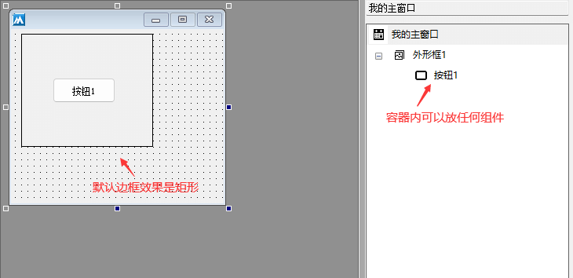
● 外形(写)
帮助文档如下图：
通过本属性可设置边框效果，支持动态调用。
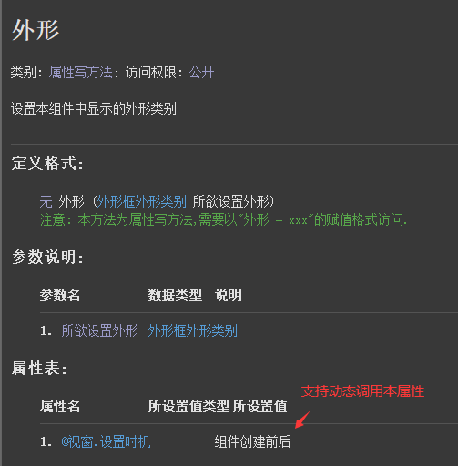
代码编写如下图：
在属性栏调用时，直接通过下拉菜单中选择需要的边框样式即可。
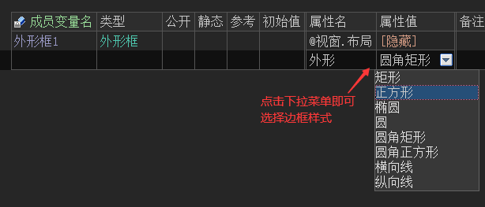
运行效果如下图：
最终边框样式将被修改。
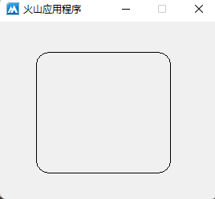
● 填充颜色(写)
帮助文档如下图：
本属性用于设置外形框内部的填充颜色，如果不需要颜色可以设置为透明色。
注：本属性支持动态调用。
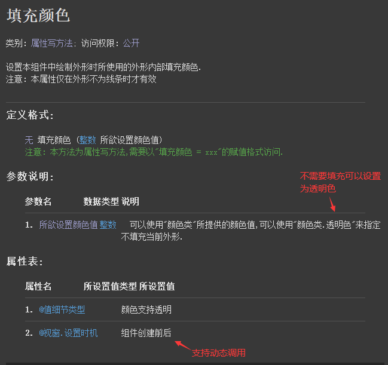
代码编写如下图：
直接在属性栏设置本属性即可，如果需要其它颜色可以点击按钮选择。
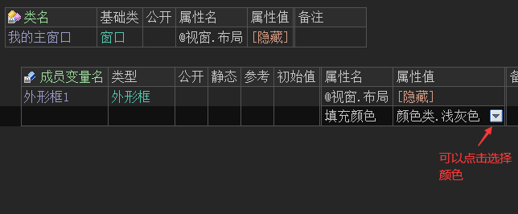
运行效果如下图：
最终外形框内部将填充为浅灰色。
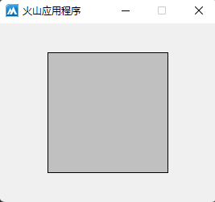
● 线型(写)
帮助文档如下图：
本属性用于设置边框线的类型，支持动态调用。
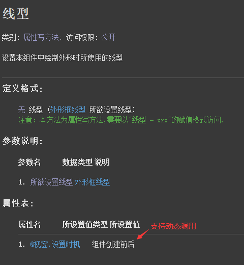
代码编写如下图：
共有六种类型可选，直接在属性表中点击选择即可。
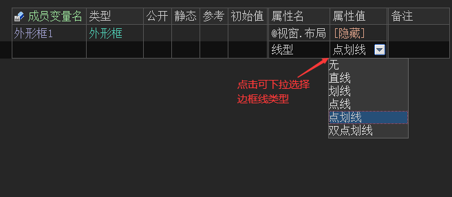
运行效果如下图：
最终边框线将显示为点划线效果。
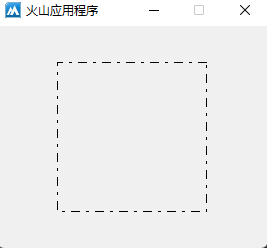
● 线宽(写)
帮助文档如下图：
通过本属性可设置线条宽度，支持动态调用。
注：本属性生效需要满足两个条件，其“线条效果”属性必须为“通常”且“线型”属性为“直线”时才有效。。
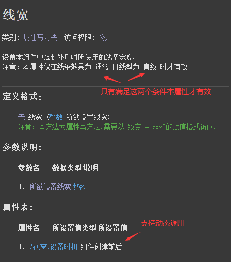
代码编写如下图：
因“线条效果”和“线型”属性的默认值分别为“通常”和“直线”，因此在使用时本属性时，如果以上两个属性未做任何修改则无需设置，直接设置本属性的值即可。
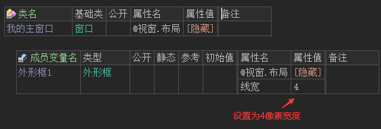
运行效果如下图：
最终外形框的线条将变宽。
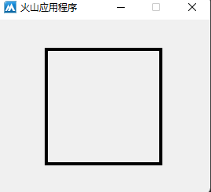
● 线条颜色(写)
帮助文档如下图：
顾名思义，用于设置线条的颜色，本属性支持动态调用。
注：使用本属性务必保证其线条效果属性为“通常”。
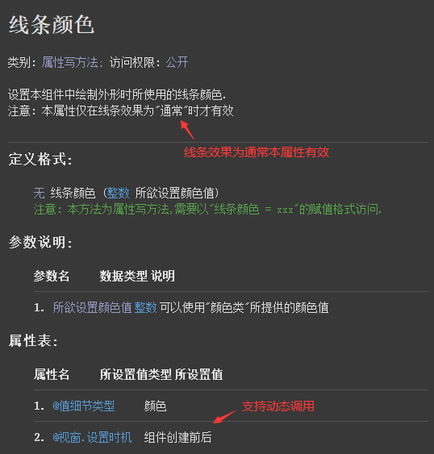
代码编写如下图：
直接在属性栏设置本属性即可，如果需要其它颜色可以点击按钮选择。
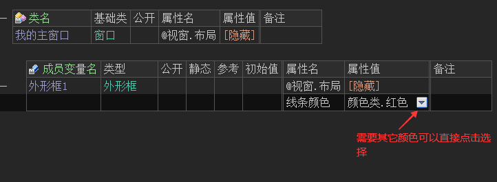
运行效果如下图：
最终线条颜色将被修改。
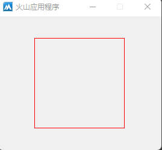
● 背景颜色(写)
帮助文档如下图：
用于设置组件背景颜色，本属性支持动态调用。
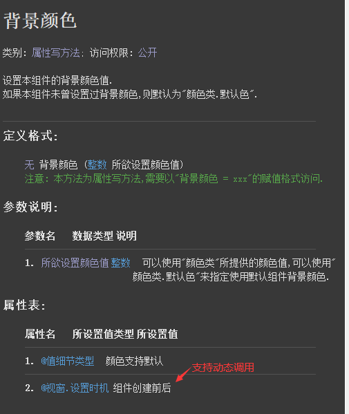
代码编写如下图：
如果想要使背景颜色属性具有明显的效果，需要将“外形”属性设置为非矩形效果，同时设置一个“填充颜色”属性。
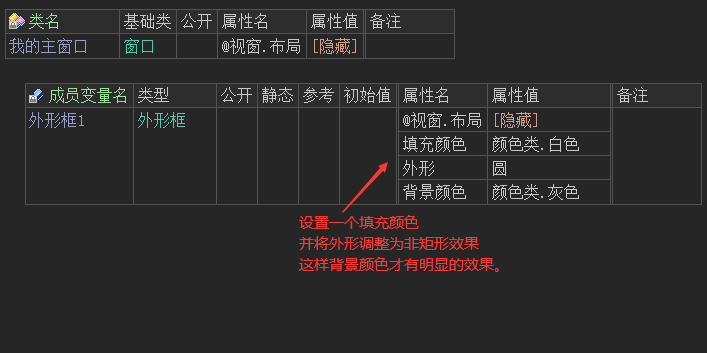
运行效果如下图：
最终可以看到背景颜色效果。
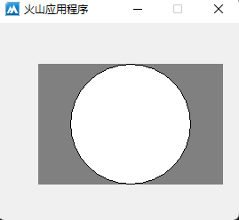